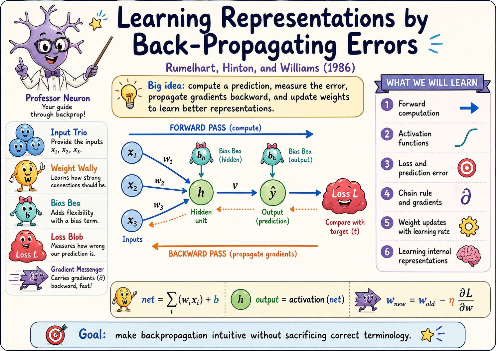
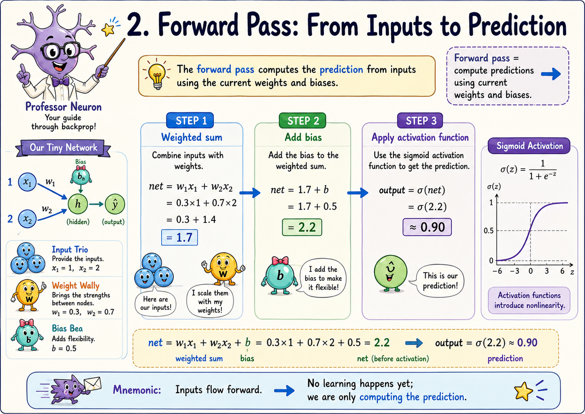
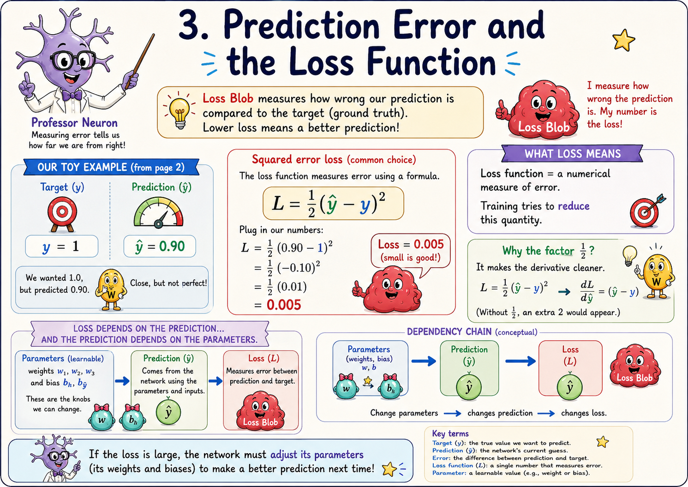
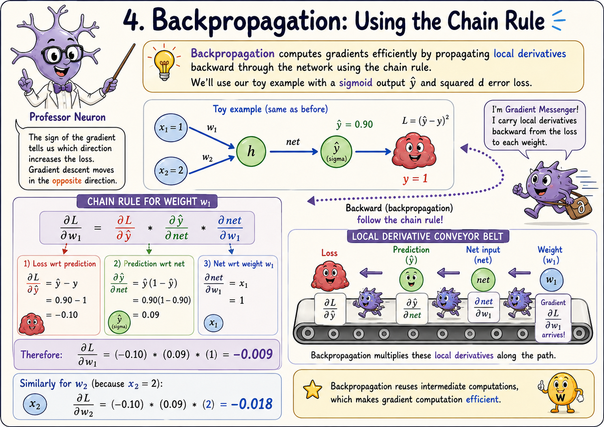
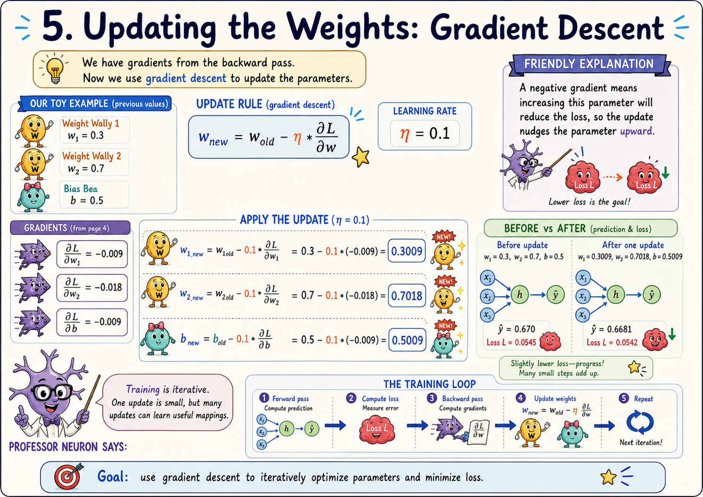
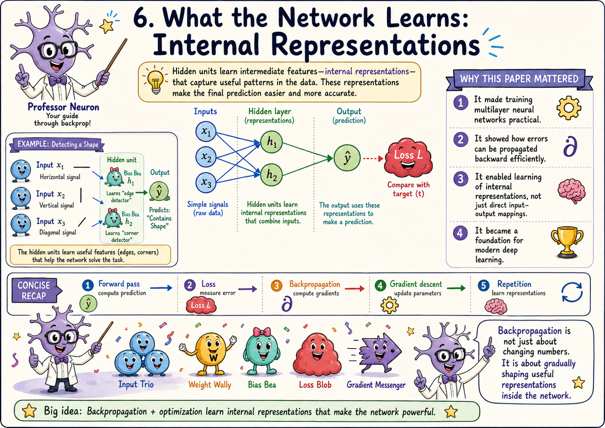

Draft visual review: these generated pages establish the visual language. Equations and labels must be checked against
examples/toy_backprop.py before publication.1. The cast and the big idea

2. Forward pass
Compute the pre-activation and prediction using the current parameters.

3. Prediction error and loss
Turn the difference between the prediction and target into a scalar objective.

4. Backpropagation and the chain rule
Follow dependencies backwards and multiply local derivatives.

5. Gradient descent
Use the computed gradients to update parameters; this is optimisation, not backpropagation itself.

6. Internal representations
Repeated updates shape hidden activations into representations useful for the task.
